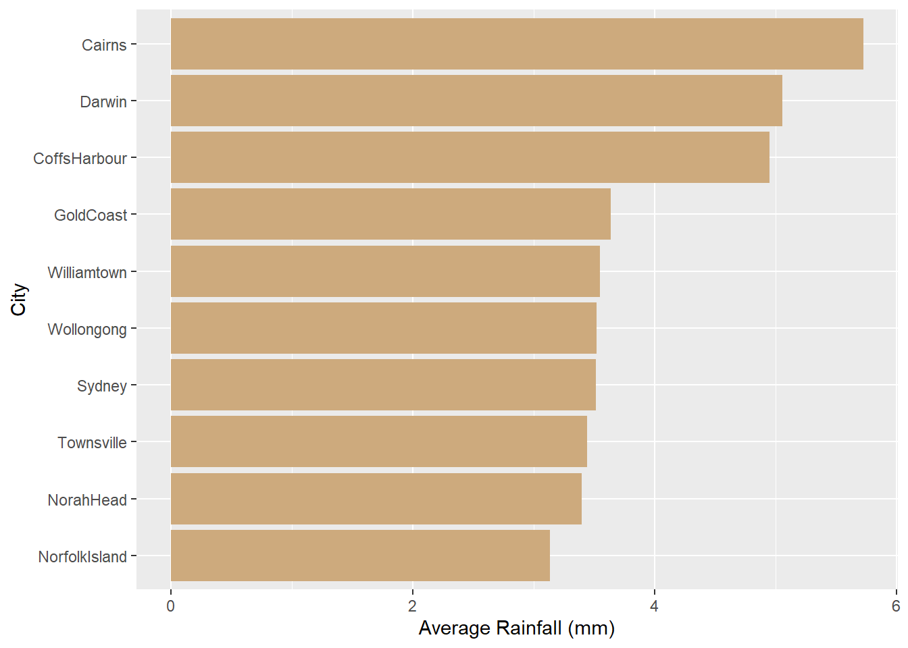
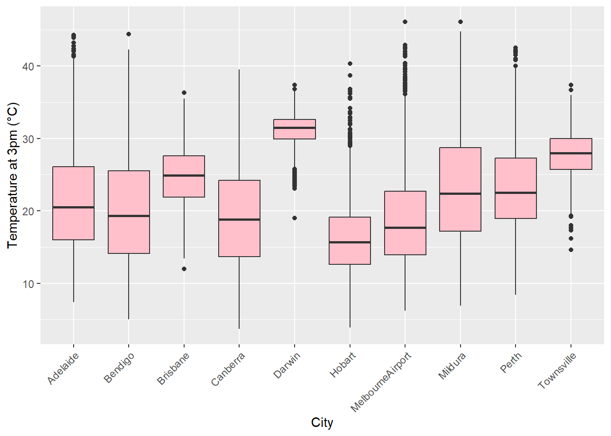

# Load the dataset
data <- read.csv("data/weatherAUS.csv")Weather Comparison Across Australian Cities
1 Executive Summary
This report analyzes weather patterns across major Australian cities using the Rattle weather dataset. Key variables such as temperature, rainfall, and humidity were compared to uncover regional climate differences. The findings reveal distinct climate characteristics aligned with Australia’s diverse geography. These insights can support climate planning, tourism, lifestyle decisions, and future research.
2 Introduction
Australia is known for its diverse climates, ranging from tropical in the north to temperate in the south. This variability impacts agriculture, urban planning, and public health.
In this report, we compare weather characteristics across ten Australian cities using daily data from the weatherAUS dataset. The selected cities represent different climate zones, including tropical (Darwin), arid (Adelaide), and temperate (Melbourne, Hobart). The dataset includes over 10 years of weather observations, providing a robust basis for analysis. Key variables of interest are temperature, rainfall, humidity, and pressure.
These metrics reflect both short- and long-term climate trends. Through visualization and descriptive statistics, we uncover patterns that align with geographical locations. This work aims to support informed, location-specific decision-making. All analysis is reproducible using R and Quarto.
3 Cleaning the data
# 1. Drop high-missing columns
data <- data %>%
select(-Evaporation, -Sunshine, -Cloud9am, -Cloud3pm)# 2. Convert 'Date' to Date type
data <- data %>%
mutate(Date = ymd(Date))# 3. Drop rows where 'RainTomorrow' is missing
data <- data %>%
filter(!is.na(RainTomorrow))# 4. Drop wind direction columns
data <- data %>%
select(-WindGustDir, -WindDir9am, -WindDir3pm)
# 5. Convert RainToday and RainTomorrow to binary 0/1
data <- data %>%
mutate(
RainToday = if_else(RainToday == "Yes", 1, 0),
RainTomorrow = if_else(RainTomorrow == "Yes", 1, 0)
)
# 6. Drop any remaining NAs
data <- data %>% drop_na()# 7. Save cleaned data
write_csv(data, "data/data_cleaned.csv")4 Methodology
The dataset used for this analysis, weatherAUS.csv, contains over 120,000 daily weather observations recorded across various Australian cities. To ensure data quality, we removed columns with extensive missing values, such as Evaporation and Sunshine, and dropped any remaining rows with missing values to preserve analysis integrity. Wind direction columns were excluded due to their limited relevance to the city-level comparative focus. The resulting cleaned dataset, consisting of 16 variables, enabled meaningful comparisons of weather characteristics across regions.
The analysis focused on four primary variables: Rainfall, Temperature at 3pm, Humidity at 3pm, and Pressure at 9am. These were chosen to represent precipitation, thermal patterns, atmospheric moisture, and pressure systems respectively. The data was grouped by Location, enabling city-wise summary statistics and comparisons. To ensure consistency and reduce noise, we focused on cities with the highest number of observations.
To visualize precipitation differences across cities, we generated a bar plot of the ten cities with the highest average daily rainfall (Figure 1). This figure highlights distinct tropical patterns, especially in Darwin and Cairns. To complement this, a detailed summary of weather metrics including temperature, humidity, and pressure for these top 10 wettest cities is presented in Table Table 1
All analysis was conducted using the tidyverse and ggplot2 packages in R, structured within a reproducible Quarto project. GitHub was used to manage version control and collaboration, with each contributor working in individual branches.
top_rainfall <- data %>%
group_by(Location) %>%
summarise(avg_rain = mean(Rainfall, na.rm = TRUE)) %>%
arrange(desc(avg_rain)) %>%
slice_head(n = 10)
ggplot(top_rainfall, aes(x = reorder(Location, avg_rain), y = avg_rain)) +
geom_col(fill = "burlywood3") +
coord_flip() +
labs(x = "City", y = "Average Rainfall (mm)")

top_cities <- top_rainfall$Location
data %>%
filter(Location %in% top_cities) %>%
group_by(Location) %>%
summarise(
`Avg Rainfall` = round(mean(Rainfall), 1),
`Avg Temp (3pm)` = round(mean(Temp3pm), 1),
`Avg Humidity (3pm)` = round(mean(Humidity3pm), 1),
`Avg Pressure (9am)` = round(mean(Pressure9am), 1)
) %>%
knitr::kable()| Location | Avg Rainfall | Avg Temp (3pm) | Avg Humidity (3pm) | Avg Pressure (9am) |
|---|---|---|---|---|
| Cairns | 5.7 | 27.9 | 61.7 | 1014.2 |
| CoffsHarbour | 5.0 | 22.3 | 62.3 | 1018.3 |
| Darwin | 5.1 | 31.1 | 51.7 | 1011.9 |
| GoldCoast | 3.6 | 23.7 | 62.8 | 1018.0 |
| NorahHead | 3.4 | 20.8 | 67.5 | 1018.3 |
| NorfolkIsland | 3.1 | 20.4 | 67.8 | 1017.7 |
| Sydney | 3.5 | 21.8 | 54.3 | 1018.3 |
| Townsville | 3.4 | 27.8 | 57.3 | 1015.2 |
| Williamtown | 3.6 | 22.7 | 53.2 | 1018.4 |
| Wollongong | 3.5 | 19.9 | 65.1 | 1018.1 |
5 Results
Figure Figure 2 displays the 3pm temperature distribution by observation count for the top 10 Australian cities. The tropical, desert, and temperate regions of Australia are clearly distinguished by this research.
Tropical and desert climate conditions are reflected in the highest and most stable afternoon temperatures found in cities like Darwin and Alice Springs. Smaller interquartile ranges are seen in these cities, suggesting hot, consistent weather that is typical of the area. Conversely, cities with temperate, coastal climates, such as Hobart, Melbourne, and Sydney, show higher variability and cooler median temperatures. Cities like Perth and Brisbane have outliers, indicating sporadic excessive temperature events that may be caused by particular weather systems.
All things considered, the boxplot illustrates how Australia’s varied topography affects temperature distributions. While southern and coastal towns exhibit milder and more diverse climates, northern cities are often hotter and more stable. These findings show how latitude, altitude, and proximity to the coast affect temperature trends and are consistent with the anticipated climatic variation throughout Australia.
top10 <- data %>%
count(Location, sort = TRUE) %>%
slice_head(n = 10) %>%
pull(Location)
data %>%
filter(Location %in% top10) %>%
ggplot(aes(x = Location, y = Temp3pm)) +
geom_boxplot(fill = "pink") +
labs(x = "City", y = "Temperature at 3pm (°C)") +
theme(axis.text.x = element_text(angle = 45, hjust = 1))

As shown in Figure 2 cities such as Darwin and Alice Springs experience the highest and most consistent afternoon temperatures. On the other hand, Melbourne and Hobart show cooler and more varied temperature distributions. This supports the expected climatic variation between Australia’s tropical north and temperate south.
6 Discussion
This analysis highlights the significant climatic diversity across Australian cities:
Rainfall Patterns: Cities in tropical and coastal regions, such as Cairns and Darwin, receive the highest average rainfall (see Figure 1), confirming the impact of geography on precipitation. The consistent presence of coastal cities in the top 10 list indicates the influence of sea moisture and oceanic weather systems.
Temperature and Humidity: Tropical cities like Darwin and Cairns are not only warmer but also exhibit less variability in daily temperatures. This is typical for equatorial climates. In contrast, temperate cities such as Melbourne and Hobart experience cooler and more fluctuating weather, influenced by dynamic weather fronts.
Air Pressure Observations: Most cities show similar atmospheric pressure, except Darwin, where lower pressure may contribute to the region’s tropical climate and higher rainfall.
Temperature Distribution: The boxplot reinforces (see Figure 2) how geography affects temperature: inland cities are hot and stable, while southern cities are cooler and more variable. Outliers and wider spreads reflect occasional weather extremes in cities like Melbourne and Sydney.
7 Conclusion
In summary, the climate of Australian cities varies significantly by location. Northern and inland areas such as Darwin and Alice Springs are warmer and more stable in temperature, while southern and coastal cities like Melbourne, Hobart, and Sydney exhibit cooler, more variable weather. High rainfall is concentrated in tropical and coastal regions, confirming expected climate zones. These findings align with known climate patterns across the country.
8 Recommendations
For Climate Planning: City planners and infrastructure developers should consider local rainfall and temperature variability when designing drainage systems, buildings, and energy systems—especially in high-rainfall cities like Cairns and Darwin.
For Tourism and Lifestyle Choices: Tourists and residents seeking stable warm weather may prefer Darwin or Alice Springs. Those sensitive to temperature variability may find southern cities less comfortable.
For Future Research:
Incorporate Time Dimension: Explore seasonal or monthly trends to observe how rainfall and temperature vary over time.
Visualise More Variables: Add plots for humidity, temperature, or pressure to deepen comparison across cities.
Explore Extreme Events: Analyse maximum rainfall or temperature to assess weather extremes and risks.
Forecast rain tomorrow: Predict whether it will rain tomorrow based on other variables from previous records.
9 References
Wickham H, Averick M, Bryan J, Chang W, McGowan LD, François R, Grolemund G, Hayes A, Henry L, Hester J, Kuhn M, Pedersen TL, Miller E, Bache SM, Müller K, Ooms J, Robinson D, Seidel DP, Spinu V, Takahashi K, Vaughan D, Wilke C, Woo K, Yutani H (2019). “Welcome to the tidyverse.” Journal of Open Source Software, 4(43), 1686. doi:10.21105/joss.01686 https://doi.org/10.21105/joss.01686.
H. Wickham. ggplot2: Elegant Graphics for Data Analysis. Springer-Verlag New York, 2016.
Young JS (2017). “Weather Dataset (Rattle Package).” Kaggle Datasets. Retrieved from https://www.kaggle.com/datasets/jsphyg/weather-dataset-rattle-package/data